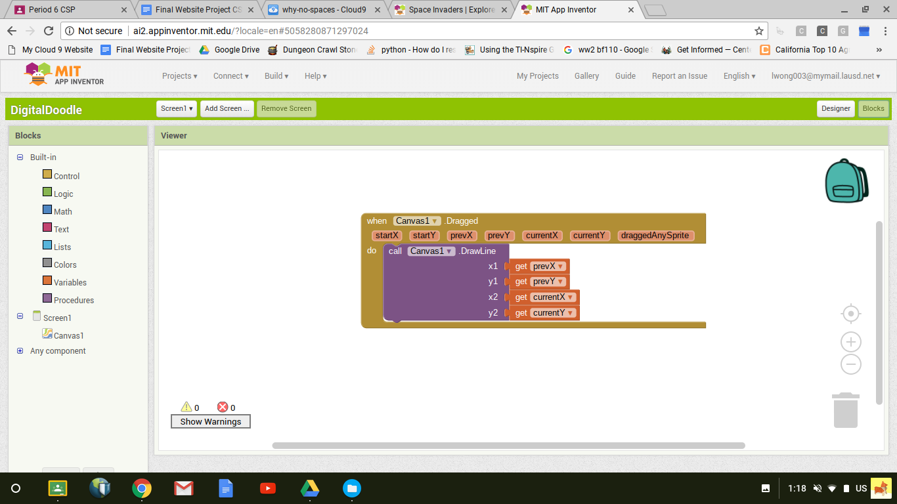

This page is dedicated to my works I have completed in my Computer Science classes. :p
These are certificates that I have completed from the Code Academy website. Impressed?
This certificate was earned via the hour of code website. I learned and made a small app with the
Applab program, it was very enlightening for me, and has me interested in creating my own app.
I love the game, and I love this programming spinoff. It was a basic command drag and drop to give out commands
in this pretty, blocky game.
Click the following screenshots to check out my simple scratch projects.
First Project. This simple project was one of my first, I created it with the help menu I tried out at home.
This was where I learned how to input commands through keystrokes or clicks.
Second Project. This is a collaboration with my classmate, Jonathan. We worked on a little story about
the Scratch cat running to a magic carpet while on the run from scrolling wolves.
Third Project. This project consisted of using the broadcasting command. This command broadcasts a figurative "signal", and when
other parts of the program recieve this program, it allows other commands to be executed, and it saves time.
Fourth Project. This is my interactive fiction work from the Python coding language. You choose between both choices as you navigate
throughout the story. Can you make it to the end?
This is the storyboard of my python interactive fiction story. Read what goes behind my story!
This project includes both my 3.1 and 3.2 AppInventor project.
This project includes my 3.3 AppInventor project.
This project includes my 3.4 AppInventor project.